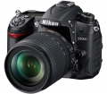
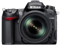
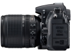
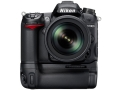
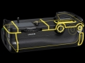
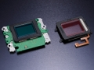

器材库 > APS及其以下画幅可换镜头数码相机 > D7000

规格总览
产品类型
APS画幅可换镜头数码相机
发布日期
2010-09-15
厂家推荐价格
140,000.00 （日元）
影像规格
影像传感器
CMOS
影像传感器尺寸
23.6 x 15.6mm
总像素
1690万
有效像素
1620万
影像处理器
EXPEED 2
色彩滤镜
RGB原色彩色滤镜
低通滤镜
感应器件前面，不可移动
色彩空间
Adobe RGB/SRGB
最大解像度
4,928 x 3,264
静态图像尺寸
4,928 x 3,264 [L], 3,696 × 2,448 [M], 2,464 × 1,632 [S]
静态图像格式
JPEG, RAW, RAW+JPEG
静态图像质量
精细，标准，基本
画幅比
3:2
短片尺寸
1920 x 1080 / 24p, 1280 x 720 / 30fps, 1280 x 720 / 25fps, 1280 x 720 / 24fps, 640 x 424 / 24fps
短片格式
MPEG4-AVC/H.264
除尘系统
多重除尘系统
镜头和对焦
镜头卡口
Nikon F
对焦系统类型
TTL相位检测
对焦点
39 个对焦点（包括 9 个十字型感应器）
对焦模式
1)自动对焦(AF): 单次伺服AF(AF-S); 连续伺服AF(AF-C); 自动伺服AF(AF-A), 2) 手动对焦(M)
自动对焦点选择
自动, 手动
AF辅助灯
有
手动对焦
支持
曝光控制
测光系统
使用2016区RGB感应器的TTL曝光测光
测光模式
中央重点测光, 点测光
测光范围
矩阵测光或中央重点测光：0-20EV~点测光：2-20EV
曝光模式
Auto, P（程序自动曝光）, A（光圈优先自动曝光）, S（快门速度优先自动曝光）, M（手动测光曝光）
快门类型
电子控制，纵走式，焦平面快门
快门速度
1/8000-30 秒（以 1/3、1/2 或 1EV 为步长进行微调）、B 门、X250
曝光补偿
±5EV以1/3或1/2或1EV级调整
自动曝光锁
有
自动包围曝光
0.3，0.7，1.0，1.3，1.7，或 2.0 EV定级调校的 2 至 3 次曝光
ISO感光度
100, 200, 400, 800, 1600, 3200, 6400, 可扩展至25600
白平衡
日光, 白炽灯, 闪光灯, 色温调节, 阴天, 荧光灯, 阴影, 自动, 预设白平衡
自拍
10秒, 2秒, 5秒, 20秒
连拍
每秒6张
闪光灯
内置闪光灯
弹出式
闪光模式
TTL, 慢速同步, 减轻/消除红眼
闪光指数
GN 12 (ISO 200)
闪光同步模式
前帘同步, 后帘同步
外接闪光灯
SB系列闪光灯
取景器/显示屏
取景器
眼平五棱取景器, 固定
取景范围
100%
取景放大倍率
0.94倍
屈光度调节范围
-3.0 ~ +1.0
反光镜
快速瞬回半透明
景深预视
有
LCD类型
低温多晶硅TFT LCD
LCD尺寸
3.0英寸
LCD像素
92.1万
视野率
100%
Live View
有
Live View 对焦模式
手持模式和三脚架模式，可作虚拟水平调整
文件输入/输出
存储卡
SD/SDHC, SDXC
数据接口
USB2.0
视频/音频接口
HDMI 输出, MIC 输入
电源
电池
一节EN-EL15锂离子充电电池
续航能力
约1050 张
机身规格
材质
镁合金机身外壳
颜色
黑色
尺寸
132 X 105 X 77mm
重量
690g
其它
支持语言
中文（简体）, 中文（繁体）, 英语, 日语, 丹麦语, 荷兰语, 法语, 德语, 意大利语, 韩语, 挪威语, 波兰语, 葡萄牙语, 俄语, 西班牙语, 瑞典语
附件
交流电源适配器（选购）；EH-5a交流电源适配器，需要使用EP-5B电源连接器
软件
Nikon Transfer 和ViewNX软件套装
备注
3D彩色矩阵测光II (G及D型镜头) ；动态 D-Lighting 在昏暗或高光环境下可优化色调还原效果；兼容 GPS 装置 GP-1（另购）
TC18002014-06-24 20:194.81 分
操作性 4.50功能性 5.00美观性 5.00趣味性 5.00耐用性 4.50性价比 5.00解像力 5.00色彩还原 4.50
wingszero2014-06-14 17:414.38 分
操作性 4.50功能性 5.00美观性 4.50趣味性 4.50耐用性 4.00性价比 4.50解像力 4.00色彩还原 4.00
hombbb2014-02-23 00:28
promise3232014-02-16 14:184.56 分
操作性 4.50功能性 5.00美观性 5.00趣味性 4.50耐用性 4.50性价比 5.00解像力 4.00色彩还原 4.00
alpa2014-01-03 18:553.06 分
操作性 4.00功能性 4.00美观性 3.50趣味性 3.00耐用性 3.50性价比 2.00解像力 4.00色彩还原 0.50
d62013-12-26 20:205 分
操作性 5.00功能性 5.00美观性 5.00趣味性 5.00耐用性 5.00性价比 5.00解像力 5.00色彩还原 5.00
on11chan2013-12-03 22:444.31 分
操作性 4.00功能性 4.50美观性 4.00趣味性 4.00耐用性 4.50性价比 5.00解像力 4.50色彩还原 4.00
shengxcx2013-11-25 11:184.25 分
操作性 5.00功能性 4.50美观性 4.00趣味性 4.50耐用性 4.00性价比 5.00解像力 4.00色彩还原 3.00
Roy宋2013-11-20 21:324.25 分
操作性 4.50功能性 4.50美观性 4.50趣味性 4.00耐用性 4.50性价比 4.00解像力 4.00色彩还原 4.00
125451792013-11-18 22:273.5 分
操作性 4.00功能性 4.50美观性 5.00趣味性 4.50耐用性 2.50性价比 2.50解像力 2.50色彩还原 2.50
higggl2013-09-10 01:513.75 分
操作性 4.00功能性 4.50美观性 4.00趣味性 4.50耐用性 5.00性价比 4.00解像力 3.00色彩还原 1.00
唯长城2013-07-03 16:234.44 分
操作性 4.00功能性 3.50美观性 5.00趣味性 4.50耐用性 5.00性价比 5.00解像力 4.00色彩还原 4.50
ptt2013-06-03 17:592.06 分
操作性 3.00功能性 3.00美观性 3.00趣味性 3.00耐用性 3.00性价比 0.50解像力 0.50色彩还原 0.50
酒精烤烟2013-05-29 11:314.75 分
操作性 5.00功能性 5.00美观性 5.00趣味性 5.00耐用性 4.50性价比 4.50解像力 4.50色彩还原 4.50
rexgreen2013-02-15 13:224.13 分
操作性 4.50功能性 4.00美观性 4.00趣味性 4.50耐用性 4.50性价比 3.50解像力 4.00色彩还原 4.00
八法2013-02-11 11:214.94 分
操作性 5.00功能性 5.00美观性 5.00趣味性 5.00耐用性 4.50性价比 5.00解像力 5.00色彩还原 5.00
jiehun20102013-02-01 23:59
红翡翠2013-01-26 14:384.81 分
操作性 5.00功能性 5.00美观性 4.50趣味性 4.50耐用性 4.50性价比 5.00解像力 5.00色彩还原 5.00
Roy宋2013-01-06 08:55
richie0252013-01-02 23:052.81 分
操作性 3.00功能性 3.00美观性 4.00趣味性 3.00耐用性 2.00性价比 2.00解像力 3.50色彩还原 2.00
insol2012-12-27 01:124.63 分
操作性 5.00功能性 5.00美观性 4.00趣味性 5.00耐用性 5.00性价比 3.50解像力 4.50色彩还原 5.00
kimithomas2012-12-26 10:175 分
操作性 5.00功能性 5.00美观性 5.00趣味性 5.00耐用性 5.00性价比 5.00解像力 5.00色彩还原 5.00
kimithomas2012-12-26 10:16
kimithomas2012-12-26 10:06
beaverchan2012-12-07 16:404.5 分
操作性 4.50功能性 5.00美观性 4.00趣味性 4.50耐用性 4.50性价比 5.00解像力 4.50色彩还原 4.00
steamedbun2012-12-03 21:104.94 分
操作性 5.00功能性 5.00美观性 4.50趣味性 5.00耐用性 5.00性价比 5.00解像力 5.00色彩还原 5.00
digitalera2012-11-29 20:454.31 分
操作性 4.50功能性 4.50美观性 4.00趣味性 4.50耐用性 4.00性价比 4.50解像力 4.50色彩还原 4.00
raindragon2012-11-26 20:114.56 分
操作性 5.00功能性 5.00美观性 4.50趣味性 4.50耐用性 4.50性价比 4.50解像力 4.50色彩还原 4.00
红翡翠2012-11-03 22:40
两顶帽2012-10-16 21:364.63 分
操作性 5.00功能性 5.00美观性 5.00趣味性 4.00耐用性 4.50性价比 4.50解像力 4.50色彩还原 4.50
呼神护卫2012-10-05 10:504.31 分
操作性 4.00功能性 5.00美观性 4.00趣味性 4.50耐用性 4.00性价比 4.50解像力 4.50色彩还原 4.00
hammerrest2012-10-02 20:214.75 分
操作性 4.50功能性 5.00美观性 4.50趣味性 4.50耐用性 5.00性价比 4.50解像力 5.00色彩还原 5.00
htabc2012-08-24 10:414.88 分
操作性 5.00功能性 5.00美观性 5.00趣味性 5.00耐用性 4.50性价比 4.50解像力 5.00色彩还原 5.00
海盗船长12012-07-30 03:544.88 分
操作性 5.00功能性 5.00美观性 4.50趣味性 4.50耐用性 5.00性价比 5.00解像力 5.00色彩还原 5.00
syd811122012-07-28 11:024.88 分
操作性 5.00功能性 5.00美观性 4.00趣味性 5.00耐用性 5.00性价比 5.00解像力 5.00色彩还原 5.00
阿番2012-07-21 17:054.63 分
操作性 5.00功能性 5.00美观性 5.00趣味性 5.00耐用性 4.00性价比 4.00解像力 4.50色彩还原 4.50
Pantrol2012-07-08 03:324.5 分
操作性 4.00功能性 4.50美观性 5.00趣味性 4.50耐用性 5.00性价比 3.50解像力 4.50色彩还原 5.00
v2802012-06-13 20:55
masterbird2012-05-04 23:214.56 分
操作性 5.00功能性 5.00美观性 4.50趣味性 4.50耐用性 4.50性价比 4.00解像力 4.00色彩还原 5.00
woodenbenchen2012-04-11 17:565 分
操作性 5.00功能性 5.00美观性 5.00趣味性 5.00耐用性 5.00性价比 5.00解像力 5.00色彩还原 5.00
YANG6707252012-03-03 08:294.94 分
操作性 5.00功能性 5.00美观性 5.00趣味性 5.00耐用性 5.00性价比 4.50解像力 5.00色彩还原 5.00
andersonttt2012-03-02 02:495 分
操作性 5.00功能性 5.00美观性 5.00趣味性 5.00耐用性 5.00性价比 5.00解像力 5.00色彩还原 5.00
let享受色影2012-02-20 14:164.31 分
操作性 4.50功能性 4.50美观性 4.50趣味性 5.00耐用性 4.50性价比 3.50解像力 4.50色彩还原 3.50
融552012-02-14 14:50
plololq2012-02-02 00:214.63 分
操作性 5.00功能性 5.00美观性 4.50趣味性 4.50耐用性 5.00性价比 4.00解像力 4.50色彩还原 4.50
zengnewbees2012-01-25 15:294.63 分
操作性 4.00功能性 4.50美观性 4.50趣味性 4.50耐用性 4.50性价比 5.00解像力 5.00色彩还原 5.00
andrelee2012-01-10 11:053.88 分
操作性 4.00功能性 4.00美观性 4.50趣味性 4.50耐用性 3.50性价比 3.50解像力 3.50色彩还原 3.50
abc19642011-12-28 10:17
yangyu9999992011-12-23 18:134.75 分
操作性 5.00功能性 4.50美观性 5.00趣味性 5.00耐用性 5.00性价比 4.00解像力 5.00色彩还原 4.50
莞蓝星2011-02-15 01:024.75 分
操作性 4.50功能性 5.00美观性 4.00趣味性 5.00耐用性 4.50性价比 5.00解像力 5.00色彩还原 5.00
chenke10192011-01-19 22:554.44 分
操作性 4.50功能性 3.00美观性 4.50趣味性 4.50耐用性 4.50性价比 4.50解像力 5.00色彩还原 5.00
squreer2011-01-19 20:244.69 分
操作性 4.50功能性 5.00美观性 5.00趣味性 4.50耐用性 5.00性价比 4.00解像力 5.00色彩还原 4.50
driftsuho2011-01-18 00:384.63 分
操作性 4.00功能性 5.00美观性 5.00趣味性 5.00耐用性 4.50性价比 3.50解像力 5.00色彩还原 5.00
swar2011-01-08 12:514.81 分
操作性 5.00功能性 5.00美观性 4.50趣味性 5.00耐用性 5.00性价比 4.00解像力 5.00色彩还原 5.00
小戴2011-01-07 15:565 分
操作性 5.00功能性 5.00美观性 5.00趣味性 5.00耐用性 5.00性价比 5.00解像力 5.00色彩还原 5.00
花果山寨主2011-01-07 11:024.88 分
操作性 5.00功能性 5.00美观性 5.00趣味性 5.00耐用性 4.50性价比 4.50解像力 5.00色彩还原 5.00
guhaojun2010-11-25 22:154.75 分
操作性 5.00功能性 5.00美观性 4.50趣味性 5.00耐用性 4.00性价比 5.00解像力 4.50色彩还原 5.00
RRM2010-11-22 17:564.81 分
操作性 5.00功能性 5.00美观性 4.50趣味性 4.50耐用性 5.00性价比 4.50解像力 5.00色彩还原 5.00
summerso1stice2010-11-19 10:204.63 分
操作性 5.00功能性 4.50美观性 5.00趣味性 5.00耐用性 4.50性价比 4.00解像力 4.50色彩还原 4.50
产品图 / 样片
D7000+18-105VR

D7000

D7000

D7000

MB-11_1

防尘系统
评测 / 相关文章
- 详细内容 （存档）
- 中端单反 D7000测试报告 （存档）
- 尼康D7000试用体验 （存档）
- 同门较艺 D7000D5100D3100对比评测 （存档）
- 细节定高下 D7000 D5100 D3100试用 （存档）
- 中级进化 尼康D7000试用报告 （存档）
- ［资讯］尼康数码单反汇总 － 截至2013年5月 （存档）
- ［资讯］尼康公布D3/D3X/D3S/D7000的最新固件 （存档）
- ［资讯］尼康D7100与D7000、D600、D4的差异 （存档）
- ［试用］假期旅行，好山好水用D7000拍摄 （存档）
- ［试用］经典再续 尼康D7000试用体验 （存档）
- ［试用］考验质感 尼康D7000胡同随拍 （存档）
- ［资讯］自制尼康D7000相机GPS （存档）
- ［资讯］2012尼康全国巡展体验活动全面启动 （存档）